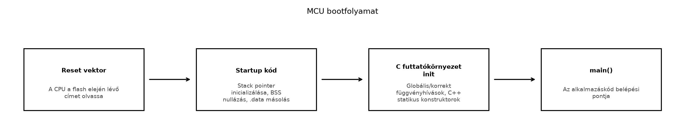

A TerraSense-rendszer eszközoldalán, a ts-node
szenzorcsomóponton egy mikrovezérlő (MCU) fut, nem pedig a megszokott
Linuxos processzor. Ha a ts-node-ot Zephyr RTOS-szel és
native_sim céllal fejlesztjük, akkor is pontosan tudnunk
kell, milyen erőforrás-korlátokkal kell számolnunk a valós hardveren. Az
MCU-n nincs virtuális memória, nincs MMU, és gyakran nincs operációs
rendszer sem abban az értelemben, ahogyan a Linuxot ismerjük. A memória
néhány száz KiB, a flash pedig legfeljebb néhány MiB nagyságrendű. Ha
ezt figyelmen kívül hagyjuk, a firmware nem fér el a flash-ben, vagy
futás közben kifogy a RAM-ból. Ezért az alfejezet célja, hogy a Linuxos
programozói szemléletet átfordítsuk a beágyazott, erőforrás-szűkös
világba.
Továbbvitt eredmény. Az itt bemutatott memória-korlát-tudatosság alapozza meg a Zephyr-szálak veremméret-választását a Szálak és ütemezés alfejezetben, a robusztus, determinisztikus eszközszoftver-architektúra tervezését a Eszközszoftver-architektúra: rétegek és állapotgépek alfejezetben, valamint az OTA-frissítés flash-méretkorlátjainak kezelését a OTA-frissítés: A/B képek, rollback, delta, fokozatos kiadás alfejezetben. A laborban mért szekcióméretek és a map-fájl elemzése ezekben a későbbi fejezetekben válik napi rutinná.
Definíció (mikrovezérlő, MCU). A mikrovezérlő egyetlen integrált áramkör, amely processzormagot, flash programmemóriát, SRAM-ot, perifériákat (GPIO, UART, I2C, SPI, ADC, időzítők) és gyakran rádiós interfészt is tartalmaz. Célja, hogy kis fogyasztással, külső komponensek nélkül, közvetlenül a hardvert vezérelje.
Definíció (mikroprocesszor, MPU). A mikroprocesszor ezzel szemben általában csak a CPU-magot és gyorsítótárat tartalmazza, a memóriát (DDR SDRAM, flash) és a perifériákat külön áramkörök biztosítják. Az MPU-ra épülő rendszerek – mint a Linuxot futtató SoC-k – rendszerint MMU-val rendelkeznek, és teljes értékű operációs rendszert futtatnak.
Definíció (MMU, Memory Management Unit). Az MMU a CPU azon egysége, amely a virtuális címeket fizikai címekre fordítja, memórialapokat kezel, és hardveres védelmet biztosít a folyamatok között. A legtöbb kisméretű MCU-n nincs MMU; nincs virtuális memória, minden kód és adat ugyanabban a fizikai címtérben osztozik.
Definíció (memory-mapped I/O). A memory-mapped I/O
olyan technika, amelyben a perifériák vezérlő- és állapotregiszterei
meghatározott fizikai memóriacímeken érhetők el. A program úgy ír vagy
olvas egy regisztert, mintha memóriát írna vagy olvasna, például egy C
pointerrel: *(volatile uint32_t *)0x40000000 = 1;.
Definíció (reset vektor). A reset vektor a memória egy rögzített címe (gyakran a flash elején), ahol a processzor az első utasítást keresi bekapcsolás vagy reset után. Ez általában egy ugrás a firmware belépési pontjára.
Definíció (BSS szekció). A BSS (Block Started by Symbol) a RAM azon része, amelyet a globális és statikus, nullázatlan vagy nullával inicializált változók foglalnak el. A C futtatókörnyezet a boot során ezt a területet nullázza ki.
Az MCU és a Linuxos SoC erőforrás-különbségeit az alábbi táblázat foglalja össze:
| Jellemző | MCU (pl. ARM Cortex-M4) | Linuxos SoC/MPU (pl. Cortex-A72) |
|---|---|---|
| Programmemória | Flash, 64 KiB – 2 MiB | eMMC/SD, több GiB |
| Adatmemória (RAM) | SRAM, 16 – 512 KiB | DDR SDRAM, 256 MiB – 16 GiB |
| MMU / virtuális memória | nincs (vagy csak MPU, lásd alább) | van |
| Operációs rendszer | bare-metal vagy RTOS (Zephyr, FreeRTOS) | teljes Linux kernel |
| Folyamatok / címtér | egyetlen címtér, szálak | több folyamat, elszigetelt címtér |
| Periféria-hozzáférés | közvetlen, regiszter-szintű | kernel driveren keresztül |
| Heap használat | kerülendő vagy szigorúan korlátozott | általános, dinamikus allokáció |
| Verem méret | fordítási időben rögzített, kicsi (néhány KiB) | dinamikusan nő, nagy (MiB) |
A memória-térkép egy tipikus, flash + SRAM architektúrájú MCU-n így néz ki (a címek illusztratívak, konkrét MCU-nál konkrét értékek):
| Címtartomány | Tartalom | Méret |
|---|---|---|
| 0x0000 0000 – 0x0001 FFFF | Flash (programkód, konstansok, vektortábla) | 128 KiB |
| 0x1FFF 0000 – 0x1FFF 03FF | Periféria regiszterek (GPIO, UART, …) | 1 KiB |
| 0x2000 0000 – 0x2000 7FFF | SRAM (adatok, verem, heap) | 32 KiB |
A periféria-regiszterek a memória-térkép egy elkülönített
tartományában vannak, nem a normál RAM-ban. A C program ezeket
volatile pointerekkel éri el, mert a fordító nem
feltételezheti, hogy az érték olvasás nélkül is ugyanaz marad, és a
sorrend fontos.
A bootfolyamat egy MCU-n – leegyszerűsítve – a következő lépésekből áll:

A lépésekhez tartozó leírás:
.data szekciót a flash-ből a
RAM-ba másolja (ezek a nem null kezdőértékű globális változók).__libc_init_array), majd meghívja a main()
függvényt.A fenti folyamat lényegesen egyszerűbb, mint egy Linux rendszer bootja: nincs kernel betöltés, nincs initramfs, nincs systemd. A teljes folyamat mikroszekundumok alatt lezajlik, ami kritikus az energiahatékonyság szempontjából.
Amikor egy beágyazott eszközhöz platformot választunk, a következő fő szempontokat mérlegeljük:
| Szempont | MCU (bare-metal / RTOS) | Linuxos SoC |
|---|---|---|
| Energiafogyasztás | alacsony (µA – mA, alvó üzemmódok) | magas (100 mA – több A) |
| BOM-költség | alacsony (1–10 USD) | magas (20–100+ USD) |
| Determinizmus | jó (nincs virtuális memória, megszakítások pontosak) | gyengébb (ütemező, laphibák, driverek) |
| Fejlesztői ismeret | C, hardverközeli programozás | teljes Linux stack, magas szintű nyelvek |
| Hálózati stack | korlátozott (IPv6/6LoWPAN, MQTT kliens) | teljes TCP/IP, bármilyen protokoll |
| Szoftverfrissítés | OTA, A/B partíciók, korlátozott méret | teljes csomagkezelő, nagyobb tárhely |
| Bonyolultság | alacsony, egyetlen kép | magas, kernel + userspace |
A TerraSense ts-node esetében az MCU a kézenfekvő választás: a feladat néhány szenzor olvasása, egy szelep vezérlése és adatküldés rádiós interfészen keresztül. Ehhez nem kell teljes Linux, viszont az energiafogyasztásnak alacsonynak kell lennie, mert az eszköz akár elemről is üzemelhet.
A statikus és dinamikus allokáció választása szintén fontos döntés.
MCU-n a dinamikus allokáció (malloc/free)
kerülendő vagy erősen korlátozott:
malloc futási ideje
nem állandó, ami valós idejű rendszerekben gondot okozhat.Ezért a Zephyr és a legtöbb beágyazott firmware-keretrendszer előnyben részesíti a statikus allokációt: a szálak veremét, az üzenetsorokat, a szemaforokat gyakran fordítási időben definiáljuk. A Zephyr is lehetővé teszi a dinamikus allokációt, de az alapértelmezett konfigurációban sok komponens statikus.
A következő laborban egy egyszerű C programot fordítunk le, és
megnézzük, hogyan oszlik el a memóriafelhasználás a különböző szekciók
között. A cél nem egy Zephyr alkalmazás, hanem annak megértése, hogyan
olvassuk a map-fájlt és a size kimenetét. Ugyanez a
folyamat alkalmazandó később a Zephyr build kimenetére is.
Munkakönyvtár: ~/iot-labor/i006
mkdir -p ~/iot-labor/i006 && cd ~/iot-labor/i006Hozzunk létre egy egyszerű C programot, amely globális, statikus és konstans változókat tartalmaz, hogy lássuk a különböző szekciókat:
/* memdemo.c – szekciók bemutatása */
#include <stdio.h>
#include <stdint.h>
/* Nem null kezdőértékű globális változó -> .data szekció */
uint32_t global_counter = 42;
/* Nullázatlan globális változó -> .bss szekció */
uint32_t global_buffer[64];
/* Konstans, csak olvasható -> .rodata szekció */
const char hello[] = "Hello, MCU!";
/* Statikus változó -> .bss vagy .data, a fordítási egységen belül */
static uint8_t local_static = 0;
int main(void) {
/* Helyi változók -> verem (stack) */
uint32_t local_var = 0;
printf("%s\n", hello);
global_counter++;
global_buffer[0] = global_counter;
local_var = global_buffer[0];
return 0;
}Fordítsuk le a programot, és kérjünk map-fájlt a linker-től:
gcc -g -Wl,-Map=memdemo.map -o memdemo memdemo.cMost nézzük meg a size parancs kimenetét:
size memdemoVárható kimenet (az értékek rendszerfüggőek, de nagyságrendileg hasonlóak):
text data bss dec hex filename
2025 628 16 2669 a6d memdemoEz a klasszikus Berkeley size formátum: a
text szekció a programkód és a konstansok mérete
(flash-ben), a data a nem null kezdőértékű globális
változók RAM-mérete, a bss a nullázott globális változók
RAM-mérete. A dec a három összege decimálisan.
Fontos megjegyezni, hogy a data szekció RAM-ban foglal
helyet, de a kezdőértékeit a flash-ben tárolják. Így a flash-foglaltság
nagyjából text + data inicializáló rész, a
RAM-foglaltság pedig data + bss + verem +
heap.
A map-fájlban a size-nél részletesebb képet kapunk.
Keressük meg benne a szekciók listáját:
Linker script and memory map
.text 0x0000000000001040 0x1a2
0x0000000000001040 _start
0x0000000000001060 main
...
.rodata 0x0000000000002000 0x20
0x0000000000002000 hello
...
.data 0x0000000000004000 0x274
0x0000000000004000 global_counter
...
.bss 0x0000000000004274 0x10
0x0000000000004274 global_buffer
...A map-fájl megmutatja az egyes szimbólumok címét és méretét, valamint a szekciók összméretét. Ebből pontosan megállapíthatjuk, melyik változó mennyi memóriát foglal.
A fenti példa x86-os Linuxon fut, ahol a címek virtuális címek. Egy
MCU-n a map-fájl ugyanígy néz ki, de a címek fizikai címek, és a
szekciók a flash és SRAM tartományokban helyezkednek el. A Zephyr build
során a build/zephyr/zephyr.map fájl ugyanígy
elemezhető.
A memóriahasználat ellenőrzésére a következő módszerek állnak rendelkezésre:
| Mit ellenőrzünk | Hogyan | Mire figyeljünk |
|---|---|---|
| Flash-foglaltság | size kimenet text + data
inicializáló része, map-fájl flash szekciók összege |
Ne lépje túl a flash méretét; hagyjon helyet az OTA partíciónak |
| RAM-foglaltság | size kimenet data + bss +
verem + heap |
Mindig hagyjon tartalékot a veremnek, ne csak a statikus adatokat nézze |
| Verem túlcsordulás | futás közbeni védőértékek (stack canary), vagy statikus elemzés | A verem alulról nő, a heap felülről; keresztezhetik egymást |
| Heap fragmentáció | ha használunk heapet, figyeljük a maximális blokkméretet | Töredezettség miatt a malloc sikertelen lehet, még ha
van szabad memória |
Tipikus hibatünetek és megoldások:
| Tünet | Ok | Javítás |
|---|---|---|
| A firmware nem fér el a flash-ben | Túl nagy kód vagy konstans táblázatok | Csökkentsük a kódot, optimalizáljunk -Os kapcsolóval,
tömörítsük az adatokat |
| Futás közben váratlan lefagyás vagy újraindulás | Verem túlcsordulás | Növeljük a verem méretét, vagy csökkentsük a lokális változókat, rekurziót |
malloc sikertelen, pedig van szabad RAM |
Heap fragmentáció | Kerüljük a dinamikus allokációt, vagy használjunk fix méretű memóriapoolt |
| A globális változó kezdőértéke nem érvényesül | A .data másolása nem történt meg a startupban |
Ellenőrizzük a startup kódot, a linker szkriptet |
| A periféria-regiszter nem reagál az írásra | Nem volatile pointer, vagy rossz cím |
Használjunk volatile-t, ellenőrizzük a
memória-térképet |
A map-fájl és a size kimenet a build folyamat részeként
automatikusan generálódik. Érdemes ezeket a CI folyamatba is beépíteni,
hogy minden commit után lássuk a méretek változását.
A heap használata megszokásból. Linuxon
természetes a malloc/free használata, de MCU-n
ez fragmentációhoz és nem determinisztikus futáshoz vezet. A Zephyrben
inkább statikus allokációt használjunk, vagy specifikus
memóriapoolokat.
A size kimenet félreértelmezése.
Sokan azt hiszik, hogy a text a RAM-ot foglalja, pedig az a
flash-ben van. A RAM-foglaltság a data + bss +
verem + heap, nem csak a data + bss. A verem
mérete gyakran jelentős lehet, és nem látszik a size
kimenetében, mert az a linker szkriptben van meghatározva.
A volatile elhagyása. A
periféria-regisztereket volatile pointerrel kell elérni,
különben a fordító optimalizálhatja a sorozatos olvasásokat/írásokat, és
a regiszter nem úgy viselkedik, ahogy várjuk.
A memória-térkép összekeverése. Nem minden MCU rendelkezik ugyanolyan memória-térképpel; a flash és SRAM címek, méretek és a perifériák helye gyártónként és típusonként eltérő. Mindig az adott MCU referencia kézikönyvét kell használni.
Magyarázza el, miért nincs szükség MMU-ra egy egyszerű szenzorcsomóponton, és milyen következményekkel jár ez a programozási modellre nézve?
Egy MCU 512 KiB flash-sel és 64 KiB SRAM-mal rendelkezik. A firmware
linkelése után a size a következőt mutatja:
text data bss dec hex
31820 2048 1024 34892 884cA linker szkript 8 KiB stack-et és 4 KiB heapet foglal le. Elfér-e a firmware, ha a következő verzióban a kód 10%-kal nő? Mi a teljes RAM-foglaltság?
Vegyünk egy egyszerű C programot, amelyben van egy nagy globális tömb
(pl. uint8_t buffer[4096]) és egy nagy lokális tömb a
main()-ben (pl. uint8_t local[8192]).
Fordítsuk le, és vizsgáljuk meg a size kimenetet, valamint
a map-fájlt. Hol jelennek meg ezek a tömbök? Módosítsuk a programot úgy,
hogy a lokális tömböt statikussá tesszük, és hasonlítsuk össze a
méreteket.
Tegyük fel, hogy a ts-node firmware-je futás közben véletlenszerűen
újraindul. A hibakeresés során azt tapasztaljuk, hogy a bss
szekció mérete nem változik, de a verem mutató értéke időnként a heap
területére mutat. Milyen hibára utal ez, és hogyan javítaná?
Egy szenzorcsomóponton nincs szükség több folyamat futtatására vagy processzszintű memóriavédelemre; a firmware egyetlen címtérben fut. Az MMU hiánya azt jelenti, hogy nincs virtuális memória, tehát minden kód és adat fizikai címeken érhető el. Ennek következménye, hogy a programozó közvetlenül hozzáférhet a perifériákhoz, de nincs hardveres védelem a hibás memória-hozzáférések ellen, és nincs laphiba (page fault) sem. A determinizmus javul, mert nincs laphiba-kezelés vagy memória-lapcsere.
A firmware jelenlegi méretei: - Flash: text + a
data inicializáló része ≈ text +
data = 31820 B + 2048 B = 33868 B. - RAM: data
+ bss + stack + heap = 2048 B + 1024 B + 8192 B + 4096 B =
15360 B.
A flash méret 512 KiB = 524288 B, a RAM 64 KiB = 65536 B. Ha a kód
10%-kal nő, akkor text 31820 B-ről 31820 × 1.1 = 34982 B-re
nő (a data és bss nem feltétlenül nő, de
feltételezhetjük, hogy a konstansok is nőnek). Az új flash-igény 34982 +
2048 = 37030 B, ami még mindig jóval a 524288 B alatt van, tehát elfér.
A RAM-foglaltság változatlan marad, ha a verem és heap mérete nem
változik, tehát 15360 B, ami szintén elfér. A válasz: elfér.
A program:
/* sectest.c */
#include <stdint.h>
uint8_t global_buffer[4096]; /* .bss */
uint8_t initialized[16] = {1}; /* .data */
int main(void) {
uint8_t local_buffer[8192]; /* veremben (stack) */
for (int i = 0; i < 8192; i++) {
local_buffer[i] = (uint8_t)i;
}
return local_buffer[0];
}Fordítás:
gcc -g -Wl,-Map=sectest.map -o sectest sectest.c
size sectest eredménye (illusztratív):
text data bss dec hex filename
1820 640 4160 6620 19dc sectestA global_buffer a .bss-ben jelenik meg
(4096 bájt), a initialized a .data-ban (16
bájt), a local_buffer pedig nem jelenik meg a statikus
méretekben, mert a veremben jön létre futás közben. A map-fájlban a
global_buffer a .bss szekcióban látható
4096-os mérettel, a initialized a .data-ban
16-tal. A local_buffer nincs a map-fájlban, mert csak futás
közben létezik.
Ha a local_buffer-t statikussá tesszük
(static uint8_t local_buffer[8192]), akkor az a
.bss-be kerül, és a size kimenet
bss mérete 4096 + 8192 = 12288 B-re nő. Ez jól mutatja a
statikus allokáció memóriafoglalását.
A leírás alapján a verem mutató a heap területére mutat, ami arra
utal, hogy a verem túlcsordult, és belelóg a heap területébe. Ez
tipikusan akkor fordul elő, ha a verem mérete túl kicsi a tényleges
használathoz képest: túl sok lokális változó, mély rekurzió, vagy nagy
lokális tömbök. A javítás: növeljük a verem méretét, vagy csökkentsük a
lokális változók méretét (pl. statikusra vagy globálisra áthelyezéssel),
illetve kerüljük a rekurziót. Zephyr alatt a
CONFIG_MAIN_STACK_SIZE vagy a szálak veremméretét lehet
növelni.
Az MCU és a Linuxos SoC közötti fő különbség az MMU és a virtuális
memória hiánya, ami közvetlen fizikai címtérhez, statikus allokációhoz
és szigorú memória-korlátokhoz vezet. A firmware a flash-ben tárolódik,
az adatok az SRAM-ban, a perifériák pedig memória-címeken érhetők el. A
bootfolyamat a reset vektortól a mainig tart, és inicializálja a
.data és .bss szekciókat. A
memóriafelhasználást a size parancs és a linker map-fájl
segítségével ellenőrizhetjük. A statikus allokáció előnyben részesítése
és a verem méretének tudatos megválasztása elengedhetetlen a robusztus,
determinisztikus firmware-hez. Továbbvitt eredmények: a
~/iot-labor/i006/ munkakönyvtárban létrehozott
memdemo.c és sectest.c programok, valamint az
elemzési módszer (map-fájl, size kimenet) a későbbi
alfejezetekben (Szálak és ütemezés, Eszközszoftver-architektúra: rétegek és
állapotgépek, OTA-frissítés: A/B képek,
rollback, delta, fokozatos kiadás) használt
memória-korlát-tudatosság alapja.
size, ld
map-fájl formátumEllenőrzési igény: a Zephyr aktuális LTS verziójának pontos API-nevei
és a native_sim board viselkedése a későbbi laborok során
ellenőrizendő. A fenti példákban szereplő size kimeneti
értékek illusztratívak, a konkrét értékek a fordítótól és a rendszertől
függnek.